Gate Management · Gate Desk · Odoo 18
A security-guard app that runs on the phone, tablet or laptop at the barrier: walk-in visitors, vehicles and material with a photo, QR / 6-digit gate passes, worker check-in and breaks — and a clean Odoo back office for the gate manager.
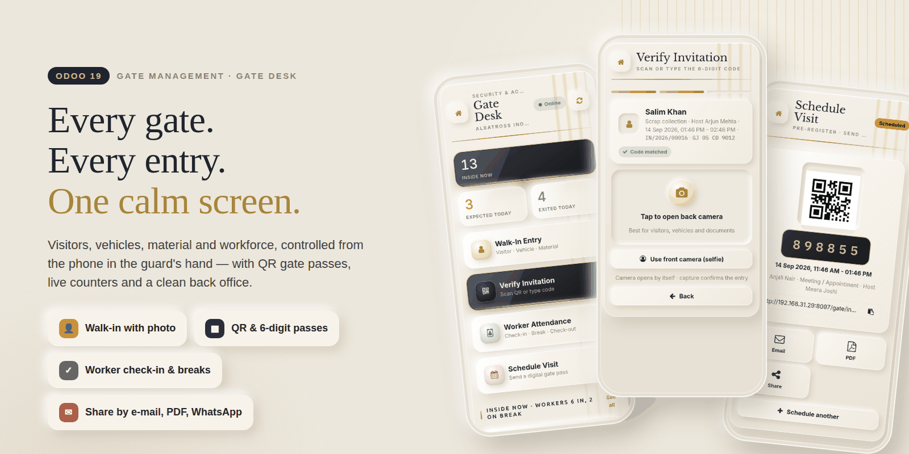
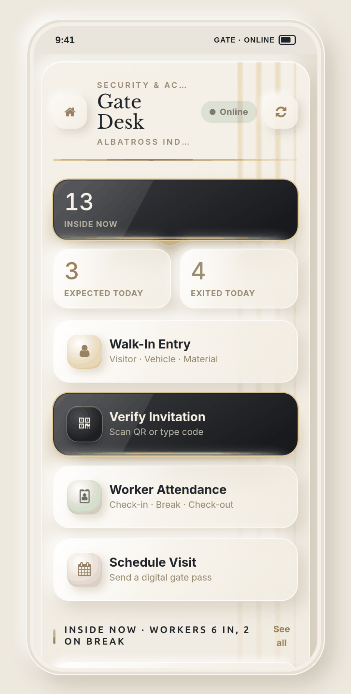
The guard's shift
The guard signs into Odoo and lands on Gate Desk: live Inside now, Expected today and Exited today counters, four big tiles, and the inside-now list with one-tap Check-Out. Every page has a Home button, so it works on a phone where Odoo's menu is hidden.
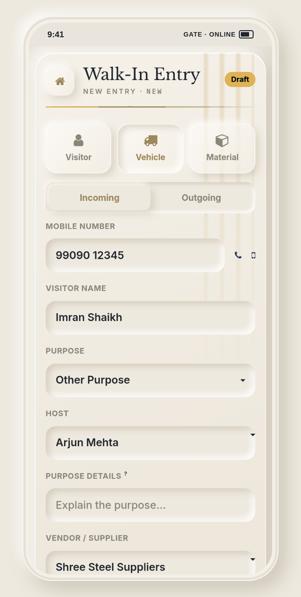
Visitor, vehicle or material in one form. Repeat visitors auto-fill from their mobile number.
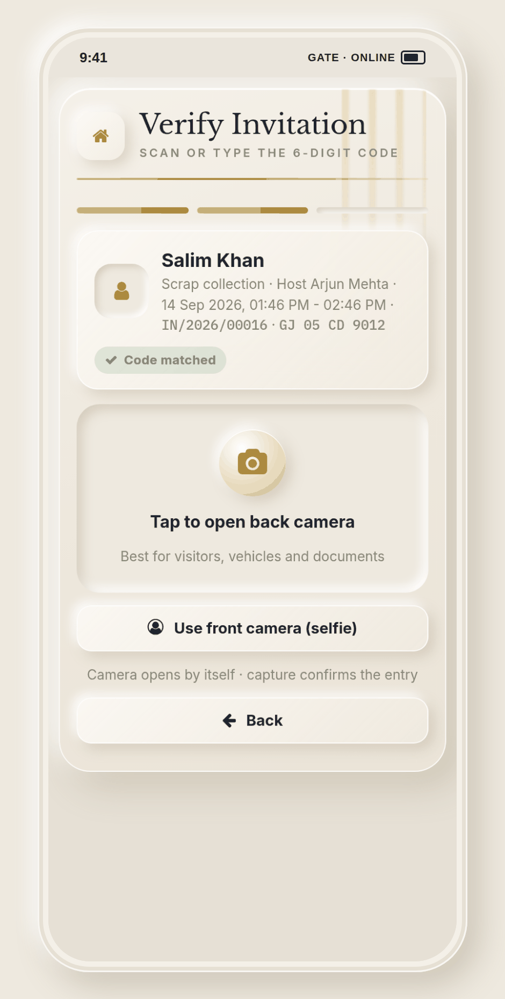
Type the 6-digit code or scan the QR. A match card shows who the pass belongs to before the photo confirms.
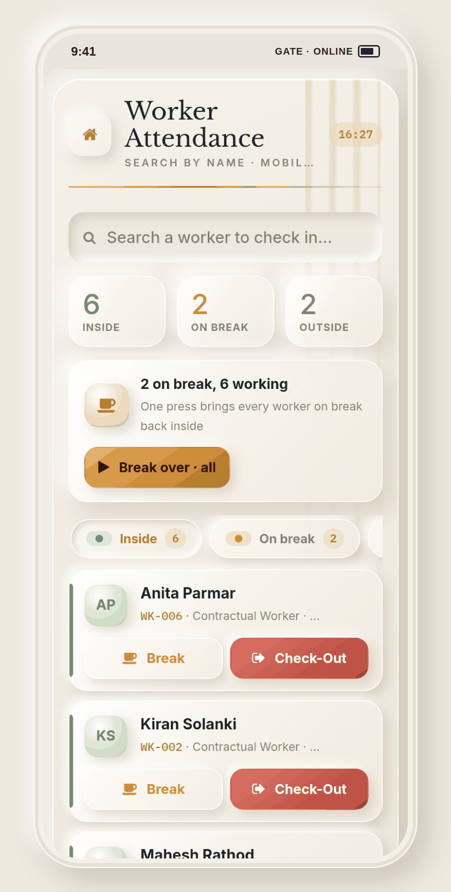
Check-in, Break, Break over and Check-out per worker — or a common break for the whole floor.
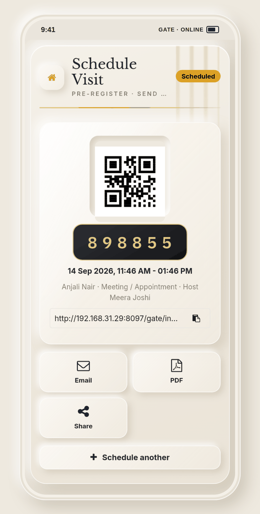
Create an invitation pass with entry code, QR and validity, then share it by e-mail, PDF, link or WhatsApp.
Walk-in entry
Three chips switch the form between a visitor, a commercial vehicle and a material movement. Big fields, large touch targets and a camera that opens in place — nothing for the guard to hunt for.
Verify invitation
Invited visitors arrive with a pass. The guard types the code on a large keypad — it verifies by itself at the sixth digit — or scans the QR with the device camera. A handheld USB / Bluetooth scanner works too.
Name, purpose, host, validity window, reference and vehicle plate — the guard sees who the pass belongs to before anything is recorded.
A pass used before or after its scheduled time shows an Outside window flag instead of a silent pass-through.
Decoding runs in the browser with the bundled jsQR library — no cloud service, nothing leaves your server.
The camera opens by itself; the capture records the entry with its time and photo, and the kiosk is ready for the next person.
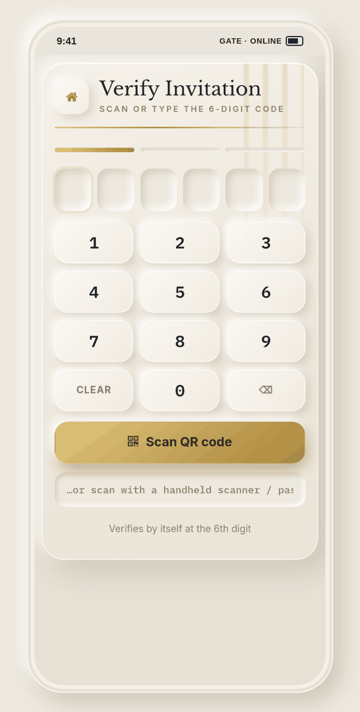
Digital gate pass
Pre-register a visitor with a validity window and Odoo generates the entry code and QR. Share it as a link to a public pass page, as a PDF, by e-mail — or on WhatsApp when the Enterprise WhatsApp app is installed.
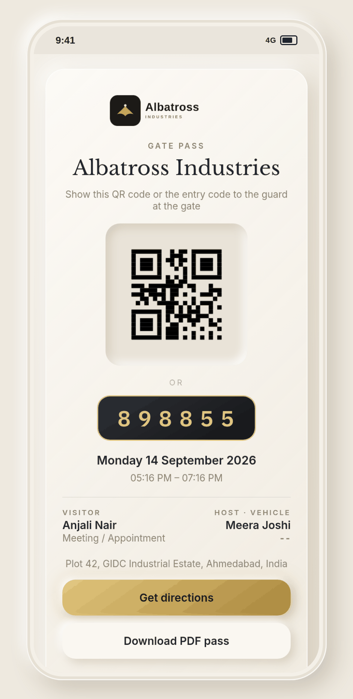
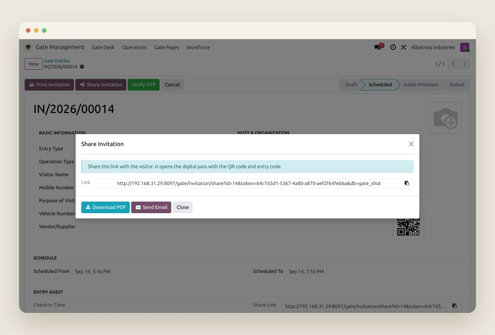
Tokenised public page, no login
Printable pass with directions
Pass attached, logged in chatter
Enterprise, via approved template
Workforce at the gate
Plants and sites run on people who are not Odoo users. Gate Desk keeps its own lightweight workforce register and records every shift and break from the same kiosk.
For the gate manager
Entries, workers, shifts and breaks are ordinary Odoo records with chatter and tracking — list them, filter them, group them, export them.
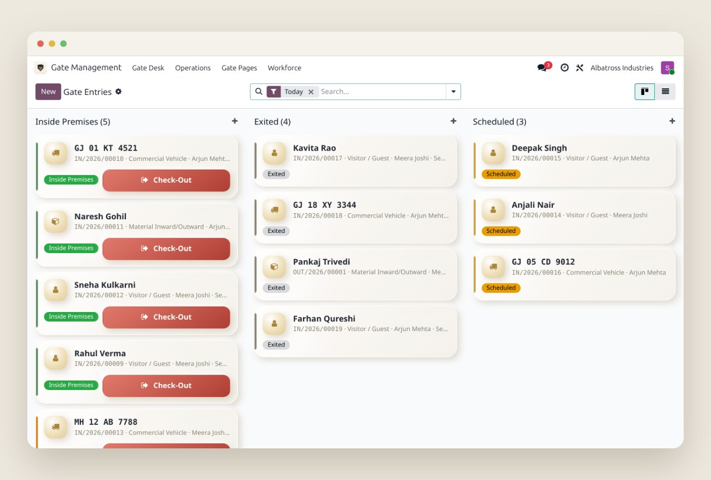
Grouped by status with a Check-Out button on every card inside. Filters for entry type, incoming / outgoing, scheduled, inside, overdue and exited; group by type, status, host or check-in day.
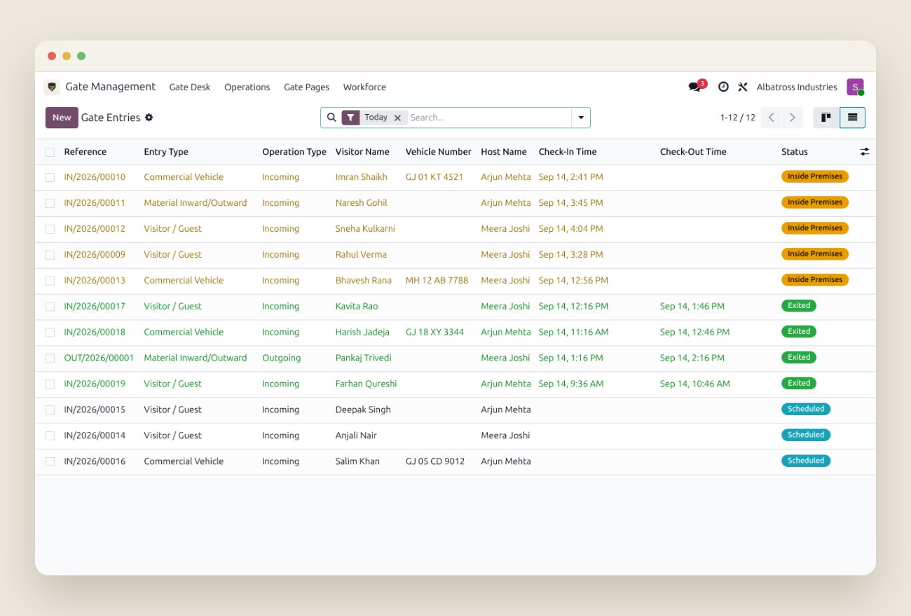
Reference, type, visitor, plate, host, check-in and check-out times and status in one exportable list. Entries carry a full chatter with every state change tracked.
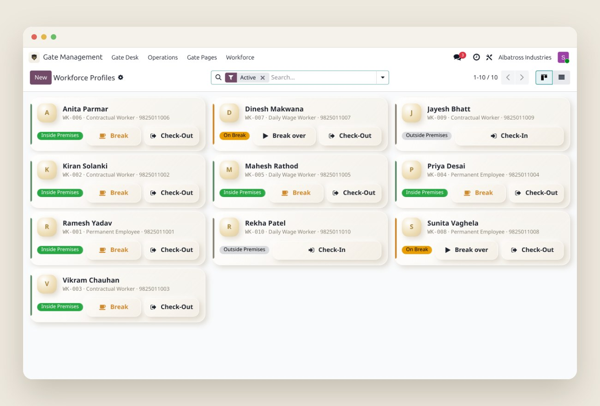
Permanent, contractual and daily-wage workers with code, mobile, photo and live status. The same attendance buttons are available here for the manager.
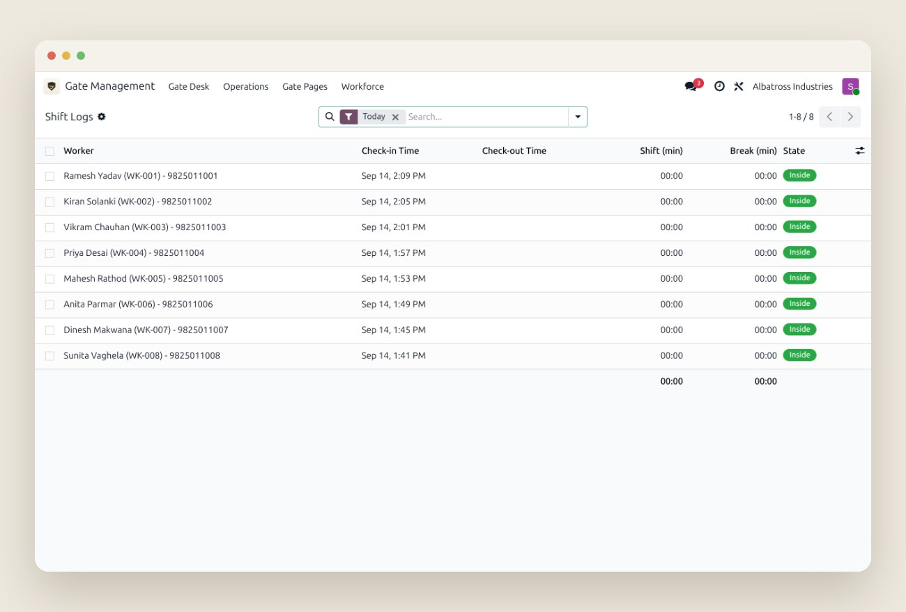
One row per shift with computed shift and break minutes, plus a separate break log — the numbers a contractor invoice or a wage sheet needs.
Everything included
Inside now, expected today and exited today, plus workers in and on break — each one taps through to the matching list.
A scheduled action closes entries whose validity has ended, every 30 minutes. Overdue entries are flagged on the home screen and in the kanban.
Plates are normalised (spaces, case) and a vehicle that is already inside cannot be entered twice — enforced on the server.
Security Guard sees only Gate Desk. Gate Manager gets Operations, Gate Pages and Workforce menus on top.
Entries and workers belong to a company; record rules keep each site's gate to itself. Passes print the company address and a Google Maps directions link.
High-contrast, big buttons, Home on every page, monospaced codes and plates. Scoped to its own screens so the rest of Odoo looks exactly as before.
Compatibility
No third-party APIs, no subscriptions, no data leaving your server. QR codes are generated and decoded locally. WhatsApp is optional and uses Odoo's own Enterprise app.
| Odoo version | 18.0 — Community and Enterprise |
|---|---|
| Depends on | base, mail, web |
Appears automatically when the Enterprise whatsapp app is installed. The Gate Pass Invitation template is created on first use and submitted to Meta for approval. | |
| Devices | Any phone, tablet or desktop browser. Camera access requires HTTPS (or localhost). |
| Setup | Install, then give users the Security Guard or Gate Manager access right. No configuration screens to fill in first. |
| Tests | Automated Python tests and a browser tour cover entries, verification, workers and the kiosk. |
| Licence | OPL-1 |
Security model
Gate Desk only: Home, Walk-In Entry, Verify Invitation, Worker Attendance, Schedule Visit. Creates and updates entries; no delete, no back office.
Everything the guard has, plus Operations (entries, inside now, worker attendance), Gate Pages and Workforce (profiles, shift logs, break logs), with cancel and delete rights.
Never need an account. The public pass page is reachable only with the entry's own random token.
FAQ
No. Any browser works. Gate Desk is a responsive Odoo action with its own Home button, so it also runs inside the official Odoo mobile app if you prefer.
Browsers only allow camera access on HTTPS (or localhost). Put Odoo behind HTTPS and it works. A handheld scanner and the keypad work regardless.
WhatsApp sending needs Odoo Enterprise with the WhatsApp app. On Community the option is simply hidden; link, PDF and e-mail sharing work everywhere.
No gateway is bundled. Set the gate_management.sms_gateway system parameter to name yours; OTP messages are logged in the entry's chatter for your integrator to hook into.
Entries past their scheduled end show as overdue on the home screen. The auto-exit scheduled action closes them every 30 minutes, and a manager can exit any entry from the backend.
No. Gate Desk has its own workforce register (permanent, contractual, daily wage) and does not depend on the Employees app. Import your list from a spreadsheet and start checking in.
Support
We answer within one business day and ship fixes for confirmed bugs free of charge for 90 days after purchase.
Gate Management · Gate Desk · © Albatross · Licence OPL-1